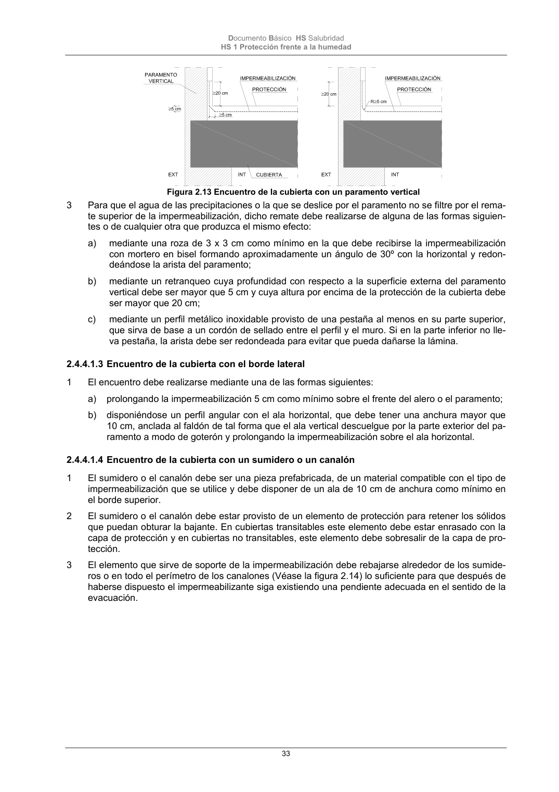

DB-HS Salubridad · edición 2022-06-14 · capa oficial
Documento DB-HS-oficial · SHA-256 del PDF 68df3caacc95f71aee2ec1ba7b2c65ae66155c21e3a8785521b8fdd4fd640d3b
Copia fiel del PDF fuente · Fuente oficial
Ficha de la disposición en la fuente oficial
Formatos: JSON del segmento · Markdown
2.4.4.1.2 Encuentro de la cubierta con un paramento vertical 1 La impermeabilización debe prolongarse por el paramento vertical hasta una altura de 20 cm como mínimo por encima de la protección de la cubierta (Véase la figura 2.13). 2 El encuentro con el paramento debe realizarse redondeándose con un radio de curvatura de 5 cm aproximadamente o achaflanándose una medida análoga según el sistema de impermeabilización. Documento Básico HS Salubridad HS 1 Protección frente a la humedad 33 Figura 2.13 Encuentro de la cubierta con un paramento vertical 3 Para que el agua de las precipitaciones o la que se deslice por el paramento no se filtre por el rema- te superior de la impermeabilización, dicho remate debe realizarse de alguna de las formas siguien- tes o de cualquier otra que produzca el mismo efecto: a) mediante una roza de 3 x 3 cm como mínimo en la que debe recibirse la impermeabilización con mortero en bisel formando aproximadamente un ángulo de 30º con la horizontal y redon- deándose la arista del paramento; b) mediante un retranqueo cuya profundidad con respecto a la superficie externa del paramento vertical debe ser mayor que 5 cm y cuya altura por encima de la protección de la cubierta debe ser mayor que 20 cm; c) mediante un perfil metálico inoxidable provisto de una pestaña al menos en su parte superior, que sirva de base a un cordón de sellado entre el perfil y el muro. Si en la parte inferior no lle- va pestaña, la arista debe ser redondeada para evitar que pueda dañarse la lámina.
